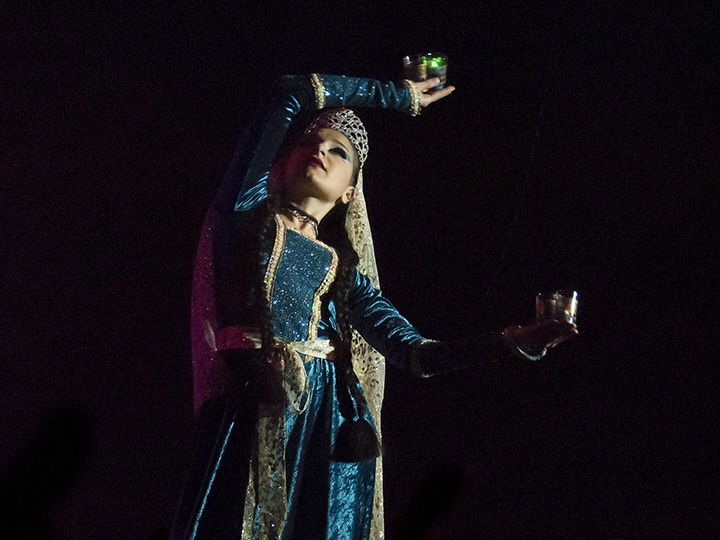

About Me
My name is Ayse Aydan Yetkin and I study Data Science at Saint Paul College in St. Paul, Minnesota. Before moving to United States, I studied veterinary medicine at Istanbul University, which was founded in 1453. After moving here, I decided to study data science, which I have always been interested in. My planned graduation date is Decemcer 2024 with the Data Science. I made this website as a portfolio of my skills developing websites. I have taken the following classes at Saint Paul College:Next semester I will be taking Intermediate Statistics. My hobbies include video gaming, travelling, and dancing.
- Web Fundamentals, where I learned HTML and CSS
- Computer Science and Information Systems
- Introduction to Computing and Programming Concepts
Historical Gate of Istanbul University
My Dance Pictures
I made this photo gallery in JavaScript. It includes some dance pictures I have myself.
